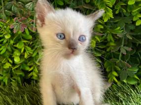

Donde nación la Kitty?
La Kitty es una gata siamesa nacida en Caaguazú, en el mes de septiembre
Ella fue llevada en su primer mes de edad a la ciudad de Caacupé, donde fue recibida por Baltazar Vazquez, ella contaba con varios problemas como;
- Desnutrición
- Parásitos
- Problemas en la columna
Sin embargo fue tratada y fue recuperándose poco a poco
